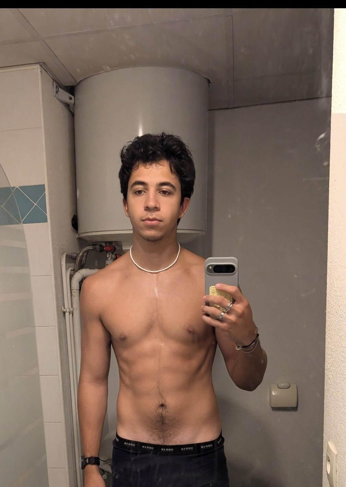
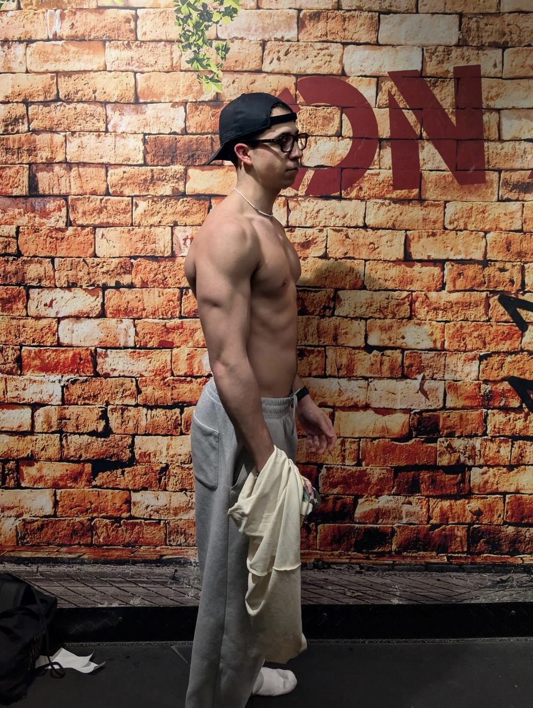

Avant / après, records battus, témoignages. Voici ce que mes athlètes ont construit avec méthode, charge après charge.


« Avant d'être avec Richard, je m'entraînais vraiment au hasard, sans voir de réelle évolution, que ce soit au niveau physique ou des performances. Les mouvements étaient vraiment horribles : je n'avais même pas de squat à 100 kg, ni de muscle-up.
Avec lui, j'ai débloqué mes muscle-ups — j'ai même réussi à monter jusqu'à 7,5 kg au muscle-up, et je suis sûr qu'on va encore progresser. Au squat, j'ai atteint 157 kg avec beaucoup de facilité sur la charge. Sans parler des dips : là où j'étais bloqué à 45 kg, j'ai fait une rep à plus de 73 kg, en 1 an avec lui.
Ce que j'ai le plus apprécié, c'est de ne plus avoir à réfléchir à quoi faire en arrivant à la salle, tout en voyant les résultats. Il est disponible à tout moment : même en pleine séance, je pouvais lui envoyer un message. Et l'ambiance avec les autres coachés est incroyable. »
« Je stagnais à 80 kg lestés au dips et un muscle-up à 12,5 kg. En 4 mois de suivi, je suis passé à 100 kg au dips et 17,5 kg au muscle-up. Richard est à l'écoute et super motivant. Si vous visez une compétition et que vous voulez un suivi propre et en toute confiance, choisissez d'être suivi par lui. »
« J'étais bloqué dans la gestion de ma fatigue nerveuse, du coup ma progression n'était pas constante. Depuis, je suis passé de 3 reps à 2,5 kg à 2 reps à 10 kg au muscle-up, et de 3×60 kg RPE 10 aux dips à 3 séries de 4 à 65 kg RPE 7. Ce que j'apprécie, c'est l'ambiance avec les autres et la réactivité de Richard quand je me pose des questions. Je le recommande à ceux qui n'ont pas de notions en force ou qui veulent passer un cap dans leur pratique. »
Rejoins les athlètes qui ont arrêté de stagner. Diagnostic gratuit, programme sur-mesure, et on construit ta force ensemble.
Réserver mon appel découverte →